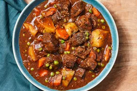

Hot Cross Buns
I love hot cross buns and look forward to making these fruity spiced buns every Easter! I like to make the dough in a bread machine, but I have included instructions at the end of this recipe for using a stand mixer.
Prep Time - 20 mins
Cook Time - 20 mins
Additional Time - 1 hr 45 mins
Total Time - 2 hrs 25 mins
Servings - 12
Yield - 12 hot cross buns
Ingredients
- cups all-purpose flour
- ¾ cup warm water (110 degrees F/45 degrees C)
- ¼ cup white sugar
- 1 large egg
- 1 large egg, separated, divided
- 3 tablespoons butter, softened
- 1 tablespoon active dry yeast
- 1 tablespoon instant powdered milk
- ⅜ teaspoon salt
- ¾ cup dried currants
- 1 teaspoon ground cinnamon
- 2 tablespoons water
- ½ cup confectioners' sugar
- 2 teaspoons milk
- ¼ teaspoon vanilla extract
Step 1
Step 2
Step 3
Step 4
Step 5
Step 6
Step 7
Step 8
Directions
Gather all ingredients.
Put flour, warm water, white sugar, egg, egg white, butter, yeast, milk powder, and salt in a bread maker and start on dough program.
When 5 minutes of kneading are left, add currants and cinnamon. Leave in the machine until doubled in size, about 1 hour.

Punch down dough on a floured surface, cover, and let rest for 10 minutes.
Shape into 12 even-sized balls and place in a greased 9x12-inch pan. Cover and let rise in a warm place until doubled, 35 to 40 minutes. Preheat the oven to 375 degrees F (190 degrees C).
Mix egg yolk with 2 tablespoons water in a small bowl; brush on dough. Bake in the preheated oven until golden brown, about 20 minutes. Remove from pan immediately and cool on wire rack.

To make the piping glaze: Mix confectioners' sugar, milk, and vanilla together until smooth. Spoon glaze into a piping bag or a sandwich bag with the corner snipped off; pipe a cross onto each roll.
Serve and enjoy!
Best served warm, Enjoy!
Other Related Recipes
 Classic Hearty Beef Stew Cajun Chicken Pasta Easy Homemade Pizza Dough
Easy Homemade Pizza Dough
 Vegetarian Chickpea Sandwich Fillin
Vegetarian Chickpea Sandwich Fillin